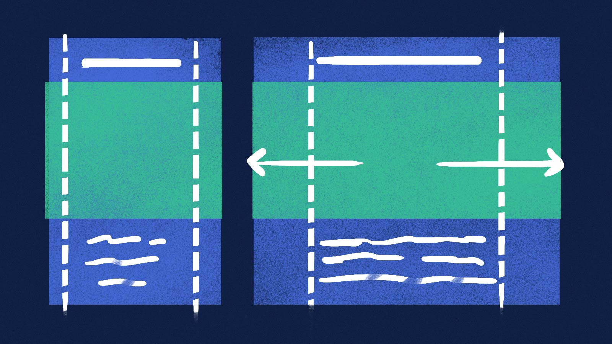
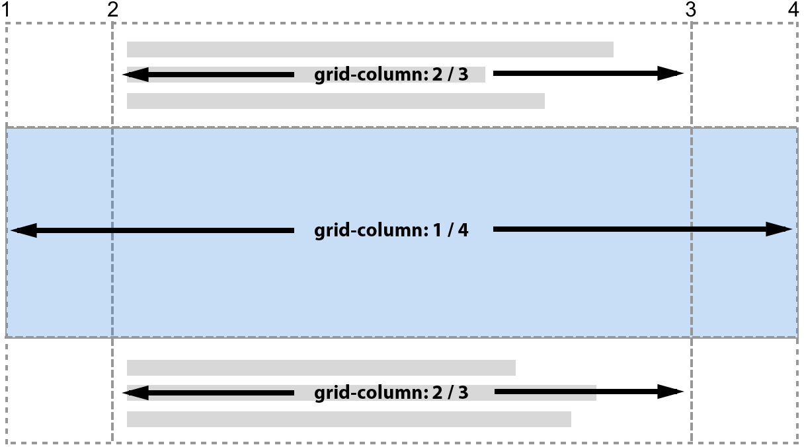

I denne opgave bliver du introduceret til hvordan du kan bruge CSS grid til at lave et responsivt layout hvor dele af indholdet får fuld bredde. Layoutet kan fx bruges hvis du fremhæve et stort flot billede inde i en tekst.
En skitse af det layout som der skal laves. Designmæssigt er layoutet godt til at fremhæve elementer som fx et flot billede eller en detaljeret graf.

Opsætning af grid
Som du kan se på ovenstående skitse så består layoutet af tre kolonner.
I koden ovenfor er body lavet til en CSS grid container. Som består af tre kolonner hvor bredderne er hhv.
1fr - en del af den overskydende plads, har derfor en fleksibel bredde
40em - størrelsesenheden em følger font-size som standard er 16px. Det vil sige at denne kolonne altid er 640px. Medmindre font-size ændres.
1fr - en del af den overskydende plads, har derfor en fleksibel bredde
Selvom layoutet nu ser fint ud, så kan det let gøres bedre til mobile enheder. Problemet er, at den midderste kolonne har en fast bredde på 640px ligegyldigt hvor den vises. I stedet kan du let gøre den dynamisk ved i stedet at tilføje en minimums- og en maksimumsbredde, som kolonnen så dynamisk følger.
For at slippe for at lave en @media query kan du anvende CSS funktionen minmax(minimum,maksimum)Læs mere om funktionen på Mozilla Developer Network. Funktionen gør at der kan sættes en minimum og en maksimum værdi, hvor det første tal i funktionen er den mindste størrelse og den sidste værdi efter kommaet er maksimum.
I koden er den midderste kolonne nu sat til dynamisk at kunne skifte bredde mellem 0 og de 40em fra tidligere. De to yderste kolonner må minimum være 1em op til 1fr
Hvis du har prøvet at bruge grid før, så kender du måske til at placere elementer ved at bruge linjernes numre. Da du har lavet et layout med 3 kolonner, kan du placere elementer ved at bruge grid-column: linje-start / linje-slut;.

Øvelse
Opret tre div blokke hvor den første og sidste div består ef en paragraf p med noget tekst. Den midderste div skal have et tilfældigt billede i form af etimg tag.
Opsæt nu dit grid som forklaret ovenfor og placer de tre div elementer som vist på billedet.